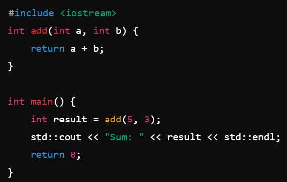
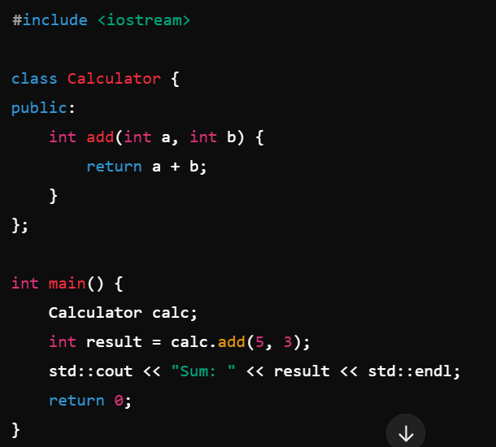
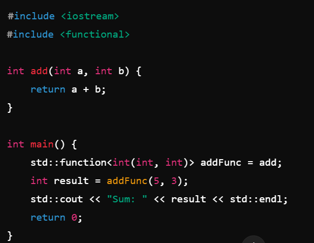

| Function-Oriented Programming(FOP) | Object-Oriented Programming(OOP) | Functional Programming(FP) |
|---|---|---|
| Functions are the primary building blocks, and data is typically passed between them | Objects are the primary building blocks | TODO |
|  |  |  |
| Emphasis on procedures or functions. Programs are structured as a sequence of operations or instructions. |
Encapsulation: Bundling data and methods together. Inheritance: Sharing behavior and data across related objects. Polymorphism: Allowing objects to be treated as instances of their parent class. Emphasis on modularity and code reuse. |
TODO |
| Simple, small programs like scripts or batch processes | Large systems requiring data modeling and modularity, like GUI applications or enterprise systems | TODO |